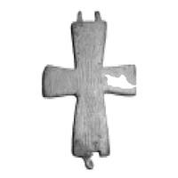

Catalog › CE-0554 · STE-1b
Valvă de encolpion de bronz cu Hristos, necropola Krăn (obr. 1 b)
sec. XII–XIII (1101–1300) · Krăn, Kazanlak, Bulgaria
single valve of a reliquary cross, bronz; c. XII–XIII (1101–1300); found at Krăn, Kazanlak, Bulgaria.


Identificare
- Categorie
- Valvă izolată
- Material
- Bronz
- Tehnică
- Turnare în relief; Gravare (incizie)
Iconografie
- Descriere avers
- Jumătate (față) dintr-un encolpion de bronz; este înfățișat Hristos în întreagă statură.
Datare și atribuire
- Datare
- sec. XII–XIII (1101–1300)
Descoperire
- Localitate
- Krăn
- Regiune
- Kazanlak
- Țară
- Bulgaria
- Context
- Necropolă / mormânt
- Coordonate
- 42.6678° N, 25.3807° E
- Precizia locului
- Doar localitatea
Păstrare și referințe
- Bibliografie
- Кр. Стефанова-Георгиева, Християнски символи (XI–XIII в.) – елементи от духовната култура на Казанлъшкия район, p. 595–598 [Стефанова-Георгиева, volum neidentificat în PDF], обр. 1 б, reprodusă la обр. 1 б (p. 597).
- Figura
- обр. 1 б
- Planșe
- Стефанова-Георгиева, p. 597
- Observații
- Descoperit în necropola din Krăn, pe pieptul unui bărbat înmormântat; se păstrează doar o jumătate. Înălțime între 6,6 și 8,3 cm (cifra este comună encolpioanelor din necropolă). Autoarea spune că crucile sunt lucrate în tehnică mixtă (turnare și gravare ulterioară a detaliilor) și le datează în sec. XII–XIII; necropola din Krăn este datată în sec. XI–XIV. Coordonate: ale localității (aproximative), nu date în sursă.
Citare: Corpus Encolpiorum, CE-0554, Valvă de encolpion de bronz cu Hristos, necropola Krăn (obr. 1 b), --root/piese/STE-1b/ (accesat 2026-10-17).